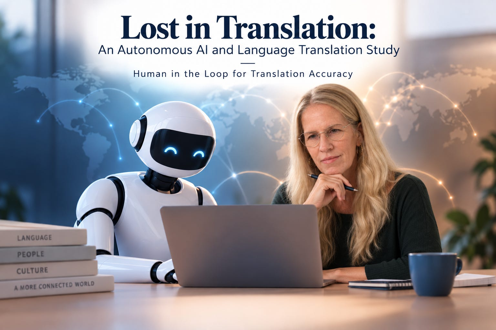

Examining Translation Accuracy, Autonomous Translation Risk, LLM Autonomous Evaluation, and the Need for Human Review
Native Speaker Reviewers: Charlotte Tao (Mandarin), Ishween Kaur (Hindi)
Auditor: Vanessa Maidoh, IEEE CertifAIEd™ Lead Assessor
As Large Language Models become embedded in global communication, education, and organizational operations, the question of whether these tools translate languages accurately has significant real-world consequences—for linguistic sovereignty and for how cultures, identities, and knowledge are represented within AI systems and digital ecosystems. This applied research white paper presents a replicable, rubric-based framework for evaluating LLM translation quality across a high-resource and a low-resource language using native speaker review to assess cultural and linguistic accuracy, a Forward and Reverse Translation Audit conducted by an IEEE CertifAIEd™ Lead Assessor to detect Bias Laundering and Linguistic Masking, and a five-prompt LLM autonomous evaluation sequence to determine whether models can accurately predict and assess their own translation capabilities.
Six Large Language Models were evaluated across two types — five commercial/proprietary and one open-source/sovereign. Findings reveal significant performance variation across models and languages. No model excelled across all evaluation dimensions in either language. The only open-source model evaluated in this study scored lowest in both language translations.
The Forward and Reverse Translation Audit confirmed Bias Laundering: systematic bias introduced in the forward translation and masked in the reverse translation, invisible to English-only readers. The five-prompt LLM autonomous evaluation sequence revealed a consistent and significant gap between model autonomous assessment and actual performance.
This paper establishes the case for Human-in-the-Loop evaluation as a requirement in language translation deployments — particularly in critical, global, and organizational workflows where accuracy, cultural integrity, and linguistic sovereignty are not optional.